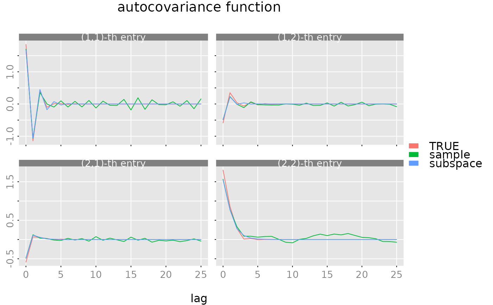

Estimate State Space Models with Subspace Methods
subspace-methods.RdEstimate (respectively construct) a state space model from a given sample or a given (sample) autocovariance function.
Arguments
- obj
Either a "time series" object (i.e
as.matrix(obj)returns an \((N,m)\)-dimensional numeric matrix) or anautocov()object (with \(L\) lags) which represents an (estimated) autocovariance function. The type of theautocovobject is irrelevant sinceest_stsp_ssalways uses the slotobj$gammawhich contains the autocovariance function.- method
Character string giving the method used to fit the model.
- s.max
(integer) maximum order of the state space model. If
NULLa default value is chosen based on the sample size \(N\), respectively based on the number of lags \(L\) of the ACF.- p
(integer) number of block columns of the Hankel matrix (size of the "past"). If
NULLthenpis chosen by fitting a "long" AR model.- p.ar.max
(integer) maximum order of the "long" AR model. If
NULLa default choice is made. This parameter is only needed in the casep=NULL.- p.factor
(integer) If
p=NULL, then the number of block columns of the Hankel matrix is set to \(p = p_f\hat{p}_{AIC}\) where \(p_f\) is this parameterp.factorand \(\hat{p}_{AIC}\) is the (AIC) estimate of the order of the "long" AR model. See alsoest_ar().- extend_acf
(boolean) If TRUE then the ACF is extended via an AR(p) model (MEST).
- sample2acf
(boolean) If
objis a data object andsample2acfis TRUE, then first the sample autocovariance function is computed and then used for the actual computations.- estorder
function, used to select the order of the state space model.
- keep_models
(boolean) should the function return a list with estimated system of order 0:s.max?
- mean_estimate
Character string giving the method used to estimate the mean \(\mu = E y_t\). Default is to use the sample mean. See the details below.
- n.obs
Optional integer which gives the sample size \(N\). This parameter is only used, when
objis anautocov()object. Ifn.obs=NULLthen the slotobj$n.obsis used. Note thatobj$n.obs=NULLorobj$n.obs=Infrefers to the case of a population autocovariance function, i.e. \(N=\infty\). For a "time series" object the sample size is of course set to the number of observations, i.e.n.obs = nrow(as.matrix(obj)). The sample size \(N\) controls the computation of the default (maximum) orders and the estimation of the order of the state space model.- ...
additional parameters, passed on to the order estimation routine.
Value
list with slots
- model
a
stsp()object, which represents the estimated state space model.- models
either
NULL(if!keep_models) or a list with the parameters of the estimated models with orders (s=0:s.max+1). This slot may e.g. be used to estimate the model order by some user defined model selection procedure.- s
(integer) the estimate of the model order.
- info
list with information about the data and the design parameters of the estimation procedure.
- stats
((s.max+1)-by-5)-dimensional matrix with statistics of the (estimated) state space models.
- y.mean
estimate of the mean \(\mu\).
Details
The procedure implements three subspace algorithms for the estimation of state space models, the AOKI method, as described in (Aoki 1990) and the CCA and MEST algorithms (see e.g. (Dahlen and Scherrer 2004) ). All three algorithms center on the weighted Hankel matrix $$(R_f')^{-T} H_{fp} R_p^{-1}$$ where the block Hankel matrix \(H_{fp}\) is the covariance between the "past" \((y_{t-1}',\cdots,y_{t-p}')'\) and the "future" \((y_{t}',\cdots,y_{t+f-1}')'\) and \(R_f\) and \(R_p\) are the cholesky factors of the covariance matrices of the "future" and the "past" respectively. The singular values of this weighted Hankel matrix are the canonical correlation coefficients between the past and the future. Note that the implementation here always sets \(f = p+1\).
AOKIs method is a realization algorithm, i.e. it reconstructs the underlying state space
model from the (population) autocovariance function. To this end a Riccati equation has to be solved,
see riccati().
If an estimated ACF is fed into this algorithm one obtains an estimate for the
state space model. However note that this may fail (in particular the Riccati
equation may have no positive definite solution) if the estimate of the ACF is not positive
definite, if the Hankel matrix is too small or if state dimension is not correct.
The CCA method estimates the state space model by first constructing an estimate of the states. Then the parameter matrices are estimated via simple LS regressions. This procedure does not give the "true" model, even in the case when the population ACF is used. However, the "distance" between the true model and the estimated model converges to zero, if the estimate of the ACF converges to the population ACF and the size \(p\) of the Hankel matrix converges to infinity.
There are two implementations of the CCA method:
If
objis a "time series" object andsample2acf==FALSEthen the helper functionest_stsp_cca_sample()is called. This implementation of CCA operates directly on the supplied data.If
objis anautocov()object or whenobjis a "time series" object andsample2acf==TRUEthen the helper functionest_stsp_cca()is called. This implementation uses an (estimated) autocovariance function. For a time series object, first the sample autocovariance function is computed and then fed into the helper function.
The key idea of the MEST algorithm is to first estimate a "long" AR model, convert this
AR model to a state space model and then to use a "balancing and truncation" method to obtain the
final estimate of the state space model. This scheme may be obtained by
calling est_stsp_ss with the option extend_acf=TRUE: This option
instructs the procedure to first estimate an AR(p) model and then to use this model
to "extend" the ACF, i.e.
to compute the values of the ACF for lags \(p+1,\ldots,2p\).
Then this extended ACF is fed into the helper function est_stsp_cca().
Note that MEST uses the autocovariance function. So for a "time series" object one has
to set sample2acf=TRUE.
These algorithms may be used for model reduction (i.e. to find a model with a smaller state space dimension than the true model) and for estimation (by feeding a sample autocovariance function in).
These algorithms may also be used as simple "model reduction algorithms". If we want to
approximate a high dimensional state space model by a model of lower order, we may proceed
as follows. First we compute the ACF of the high dimensional model and then fed
this ACF into the subspace routine est_stsp_ss, however setting the maximum order
s.max to some value less than the true order.
Note thet the AOKI procedure however, may break down, since it is not guaranteed that
the Riccati equation, which needs to be solved, has a positive semidefinite solution.
Size of the Hankel matrix
If the input parameter p=NULL then \(p\) is chosen as follows. The procedure
estimates the order of a "long" AR model with the AIC criterion. The size of
the "past" \(p\) then is set to \(p = p_f\hat{p}_{AIC}\)
where \(p_f\) is a factor (defaults to \(2\)) and
\(\hat{p}_{AIC}\) is the (AIC) estimate of the order of the "long"
AR model. See also est_ar().
Estimation of the Mean
If the input parameter obj is an autocov() object (which contains no info
about the mean \(\mu=E y_t\)) the "estimate" of the mean is simply set to
a vector of NA's.
If the input parameter obj is a "time series" object, then there are two options.
For mean_estimate == 'zero' the procedure assumes that the process is centered
(\(\mu=E y_t=0\)) and thus sets the estimate to a zero vector.
In the case mean_estimate == 'sample.mean' the sample mean of the data is used.
Order Estimation
The input parameter s.max defines the maximum order considered.
The order estimation is based on the Hankel singular values \(\sigma_s\) and/or the log det values of the estimated noise covariance matrices \(\ln\det \hat{\Sigma}_s\). Using only the Hankel singular values has the advantage that only one model has to be estimated, whereas otherwise estimates for all models with orders \(s=0,\ldots,s_{\max}\) have to be computed.
In order to exploit this (small) advantage of singular values based criteria the
order estimation runs as follows:
First the procedures call
estorder(s.max, Hsv, n.par, m, n.obs, Hsize=c(f,p), ...)
Here Hsv is an \(pm\) dimensional vector with the Hankel singular values and
n.par is an \((s_{\max}+1)\) dimensional vector with the respective number of
parameters of the models with orders \(s=0,\ldots,s_{\max}\).
If this call returns an estimate of the order then the procedures estimate a
corresonding state space model.
If this call fails (i.e returns NULL) then the procedures estimate
all models with orders up to \(s_{\max}\) and the corresponding
noise covariance matrices. The order then is estimated by calling
estorder(s.max = s.max, Hsv, lndetSigma, n.par, m, n.obs, Hsize, ...)
where lndetSigma is the vector with the log det values of the estimated
noise covariance matrices (\(\ln\det \hat{\Sigma}_s\)).
The package offers some predefined order selection procedures (see also subspace order estimates):
estorder_max(s.max, ...)simply returns the maximum orders.maxconsidered.estorder_rkH(s.max, Hsv, tol, ...)estimates the order by an estimate of the rank of the Hankel matrix.estorder_MOE(s.max, Hsv, ...)estimates the order by searching for a "gap" in the singular values.estorder_SVC(s.max, Hsv, n.par, n.obs, Hsize, penalty, ...)implements the so called Singular Value Criteria, see (Bauer 2001) : $$svc(s) = \sigma_{s+1}^2 + c(N)d(s)/N$$ Here \(\sigma_s\) is the \(s\)-th singular value of the weighted Hankel marix, \(N\) is the sample size, \(d(s) = 2ms\) denotes the number of parameters for a state space model with \(s\) states (and \(m\) outputs) and \(c(N)\)) is a "penalty" (depending on the sample size).
The above order estimation procedures only use the Hankel singular values, whereas the following procedure is based on the estimated noise covariances.estorder_IVC(s.max, lndetSigma, n.par, n.obs, penalty, ...)estimates the order via an information criterion of the form $$ivc(s) = \ln\det\hat\Sigma_{s} + c(N)d(s)/N$$ where \(\hat\Sigma_s\) is the estimate of the noise covariace matrix obtained from a model with order \(s\), \(d(s)\) denotes the number of parameters and \(c(N)\) is a "penalty" (depending on the sample size).
For both estorder_SVC and estorder_IVC the (optional) parameter
penalty controls the penalty term \(c(N)\).
Further Notes
The actual computations are done by the helper routines detailed in subspace helpers.
The type of the autocov() object is irrelevenat
since the function always uses the slot obj$gamma.
For keep_models==TRUE the estimation procedure compute all
models even in the case of a Hankel singular value based selection criterion.
References
Aoki M (1990). State Space Modeling of Time Series. Springer Verlag, New York.
Bauer D (2001). “Order estimation for subspace methods.” Automatica, 37(10), 1561 - 1573. doi:10.1016/S0005-1098(01)00118-2 .
Dahlen A, Scherrer W (2004). “The relation of the CCA subspace method to a balanced reduction of an autoregressive model.” Journal of Econometrics, 118, 293--312. doi:10.1016/S0304-4076(03)00144-1 .
Examples
set.seed(3421) # in order to get reproducible results
# create a "random", stable and miniphase state space model
m = 2 # number of outputs
s = 3 # number of states
s.max = 2*s
lag.max = max(4*s, 25)
n.obs = 1000
model = r_model(tmpl_stsp_full(m, m, s),
bpoles = 1, bzeroes = 1, sd = 0.5)
# scale sigma_L
diag(model$sigma_L) = 1
# compute ACF
gam = autocov(model, lag.max = lag.max)
# simulate data
data = sim(model, n.obs)
# sample ACF
gam.sample = autocov(data$y, lag.max = lag.max, demean = FALSE)
# AOKIs method ##############################################################
# reconstruct the true model from the population ACF
# "estimate" the order by the rank of the Hankel matrix
out = est_stsp_ss(gam, method = 'aoki', s.max = 2*s, estorder = estorder_rkH)
# compute the ACF of the constructed model.
gam.hat = autocov(out$model, lag.max = lag.max)
# check that the constructed model is equivalent to the original model
all.equal(dim(model$sys), dim(out$model$sys))
#> [1] TRUE
all.equal(gam, gam.hat)
#> [1] TRUE
# CCA based on the sample ###################################################
# estimate the order by a "singular value criterion"
out = est_stsp_ss(data$y, method = 'cca', sample2acf = FALSE, s.max = 2*s,
estorder = estorder_SVC)
# compute the ACF of the constructed model.
gam.hat = autocov(out$model, lag.max = lag.max)
all.equal(dim(model$sys), dim(out$model$sys)) # the estimated order is correct
#> [1] TRUE
all.equal(gam$gamma, gam.hat$gamma) # but of course the estimated model is not perfect
#> [1] "Mean relative difference: 0.1680467"
# CCA based on the sample ACF ###############################################
# estimate the order by an "information criterion"
out = est_stsp_ss(gam.sample, method = 'cca', s.max = 2*s,
estorder = estorder_IVC)
# compute the ACF of the constructed model.
gam.hat = autocov(out$model, lag.max = lag.max)
cat('s.hat=', dim(out$model$sys)[3], '\n') # the estimated order is s.hat=2, the true order is s=3!
#> s.hat= 2
all.equal(gam$gamma, gam.hat$gamma) # relative error of the TRUE and the estimated ACF
#> [1] "Mean relative difference: 0.1966654"
# alternatively, we may also use
out2 = est_stsp_ss(data$y, sample2acf = TRUE, mean_estimate = 'zero',
method = 'cca', s.max = 2*s, estorder = estorder_IVC)
all.equal(out$model, out2$model)
#> [1] TRUE
# MEST algorithm #############################################################
# estimate the order by an "information criterion"
out = est_stsp_ss(gam.sample, method = 'cca', extend_acf = TRUE, s.max = 2*s,
estorder = estorder_IVC)
# compute the ACF of the constructed model.
gam.hat = autocov(out$model, lag.max = lag.max)
cat('s.hat=', dim(out$model$sys)[3], '\n') # the estimated order is s.hat=2, the true order is s=3!
#> s.hat= 2
all.equal(gam$gamma, gam.hat$gamma) # relative error of the TRUE and the estimated ACF
#> [1] "Mean relative difference: 0.196599"
# make a plot of the ACFs
plot(gam, list(gam.sample, gam.hat), legend = c('TRUE', 'sample', 'subspace'))

# reset seed
set.seed(NULL)